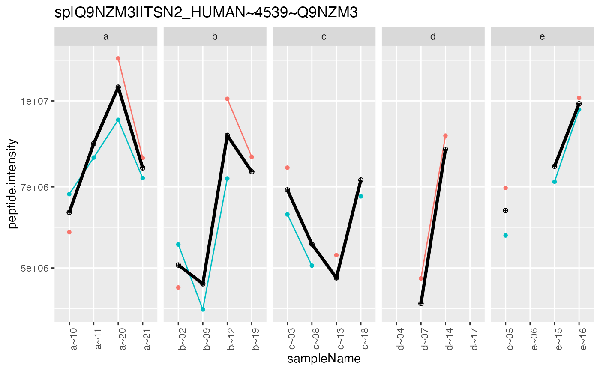

R/tidyMS_aggregation.R
intensity_summary_by_hkeys.RdSummarizes the intensities within hierarchy
intensity_summary_by_hkeys(data, config, func)
| func | - a function working on a matrix of intensities for each protein. |
|---|
retuns function object
Other aggregation:
INTERNAL_FUNCTIONS_BY_FAMILY,
aggregateTopNIntensities(),
aggregate_intensity(),
medpolishPlydf_config(),
medpolishPlydf(),
medpolishPly(),
medpolish_protein_quants(),
plot_aggregation(),
plot_hierarchies_add_quantline(),
plot_hierarchies_line_df(),
plot_hierarchies_line(),
summarizeRobust_config(),
summarizeRobust()
Other deprecated:
INTERNAL_FUNCTIONS_BY_FAMILY,
application_run_modelling_V2(),
compute_roc(),
contrasts_linfct_vis_write(),
contrasts_linfct_vis(),
medpolish_protein_quants(),
missigness_impute_contrasts(),
model_analyse_summarize_vis_write(),
model_analyse_summarize_vis(),
model_analyse_summarize_write(),
model_analyse_summarize(),
workflow_contrasts_linfct_V2(),
workflow_missigness_impute_contrasts_V2(),
workflow_missigness_impute_contrasts(),
workflow_model_analyse()
library(LFQService) library(tidyverse) bb <- LFQServiceData::skylinePRMSampleData_A config <- bb$config_f() data <- bb$analysis(bb$data, config)#>#>x <- intensity_summary_by_hkeys(data, config, func = medpolishPly)#>res <- x("unnest") x("unnest")$data %>% dplyr::select(config$table$hierarchyKeys()[1] , "medpolish")#> # A tibble: 814 x 2 #> protein_Id medpolish #> <chr> <dbl> #> 1 CiRT standards 11270672. #> 2 CiRT standards 10509481. #> 3 CiRT standards 11392209. #> 4 CiRT standards 14134372. #> 5 CiRT standards 8981748 #> 6 CiRT standards 7215736. #> 7 CiRT standards 10215290. #> 8 CiRT standards 13635517 #> 9 CiRT standards 9432541. #> 10 CiRT standards 5866130. #> # ... with 804 more rowsconfig <- bb$config_f() config$table$hierarchyDepth <- 1 x <- intensity_summary_by_hkeys(data, config, func = medpolishPly)#>x("unnest")$data#> # A tibble: 814 x 6 #> protein_Id sampleName Time Replicate.Name Isotope.Label.Type medpolish #> <chr> <chr> <chr> <chr> <chr> <dbl> #> 1 CiRT standards T8 T8 12_S165049_0923 light 11270672. #> 2 CiRT standards T2~1 T2 14_S165045_0919 light 10509481. #> 3 CiRT standards T24 T24 17_S165052_0926 light 11392209. #> 4 CiRT standards T24~1 T24 18_S165053_0927 light 14134372. #> 5 CiRT standards T336~1 T336 19_S165065_0939 light 8981748 #> 6 CiRT standards T0~2 T0 2_S165042_0895 light 7215736. #> 7 CiRT standards T336~2 T336 22_S165064_0938 light 10215290. #> 8 CiRT standards T8~1 T8 23_S165048_0922 light 13635517 #> 9 CiRT standards T8~2 T8 24_S165050_0924 light 9432541. #> 10 CiRT standards T240 T240 27_S165062_0936 light 5866130. #> # ... with 804 more rowsxnested <- x() dd <- x(value = "plot") dd$medpolishPly[[1]]#> # A tibble: 22 x 5 #> sampleName Time Replicate.Name Isotope.Label.Type medpolish #> <chr> <chr> <chr> <chr> <dbl> #> 1 T8 T8 12_S165049_0923 light 11270672. #> 2 T2~1 T2 14_S165045_0919 light 10509481. #> 3 T24 T24 17_S165052_0926 light 11392209. #> 4 T24~1 T24 18_S165053_0927 light 14134372. #> 5 T336~1 T336 19_S165065_0939 light 8981748 #> 6 T0~2 T0 2_S165042_0895 light 7215736. #> 7 T336~2 T336 22_S165064_0938 light 10215290. #> 8 T8~1 T8 23_S165048_0922 light 13635517 #> 9 T8~2 T8 24_S165050_0924 light 9432541. #> 10 T240 T240 27_S165062_0936 light 5866130. #> # ... with 12 more rowsdd$plot[[2]]# example how to add peptide count information tmp <- summarize_hierarchy(data, config) tmp <- inner_join(tmp, x("wide")$data, by = config$table$hkeysDepth())